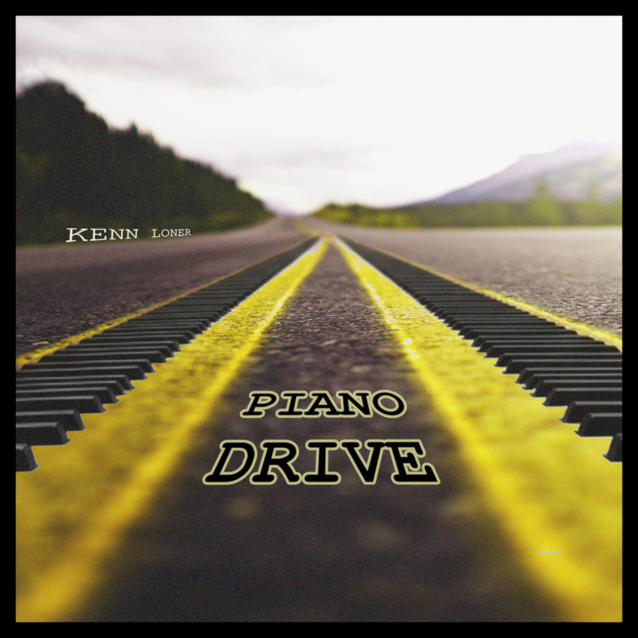

Play on your favorite platform.
Produced, Mixed, and Mastered by: Kenn Loner
Release date: August 21, 2026
"Piano Drive" is an energetic Melodic House track inspired by the nostalgic driving feel of arcade classics like Metropolis Street Racer.
Built around evolving piano motifs, deep synth leads, and lush pads, the track moves from intro into an upbeat, euphoric drop.
Featuring a unique rhythmic breakdown, it’s designed for night drives, gaming sessions, and high-energy electronic playlists.